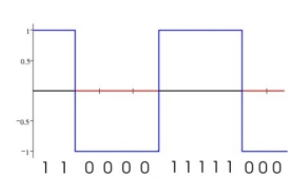

Equipamentos eletrônicos processados compreendem nativamente a linguagem binária, que é representada por sequências de 0 e 1. Esses 0 e 1 indicam o formato da onda digital que será emitida pelo equipamento, sendo que 1 representa ligado e 0 representa desligado. 
Por meio de cabos submarinos que carregam essas ondas até pontos de distribuição. Esses pontos, por sua vez, vão se interligar com a sua casa por meio dos sinais de telefonia, TV a cabo, satélite ou rádiofrequência.
Você pode conferir essa rede de cabos clicando aqui.
No entanto, os sinais transmitidos pelos meios comuns usam ondas analógicas, que não são compreendidas pelo computador. Para fazer a conversão dessas ondas, nós temos em casa um aparelho chamado modem.
O modem recebe uma onda em formato analógico e a converte para o sinal digital por meio de um processo chamado demodulação. Quando você deseja enviar sinais para a internet, você envia ondas digitais para o modem, que a converte em sinais analógicos em um processo chamado modulação.
Um roteador vai definir a melhor rota pela qual as informações irão passar para atravessar de um ponto A, na rede, para um ponto B. Dessa forma, evitará lentidão causada por congestionamento em rotas muito solicitadas.
Um computador que fornece um dado X, como por exemplo o arquivo de um site, é o servidor, e aquele que solicita esse arquivo é o cliente.
Cada ponto conectado à rede, chamado nó, recebe uma identificação chamada IP. Esse IP pode ser utilizado para acessar o arquivo. No entanto, sendo representado por uma série de números (no IPv4) e até letras (no IPv6), seria muito pouco prático gravar o IP de todos os sites que queremos acessar. Inclusive, eles mudam com o tempo.
Portanto, foi criado o DNS, que agem como "listas telegônicas", criando uma ligação entre a URL do site e o IP relacionado a ele.
Domínio é o nome que será pago para identificar seu servidor ou suas páginas.
Um domínio pode ter várias terminações, desde TLD (que indicam nacionalidade, como .br), GTLD (genéricos, como .gov .org .com .net) ou ccTLD (com designação de país como .com.br, .jp, edu.us).